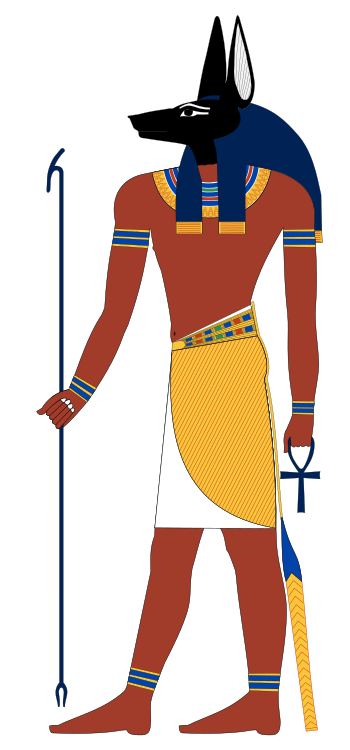

Anuis
Appearance:
Anubis was the god of embalming and the dead. Since jackals were often seen in cemeteries, the ancient Egyptians believed that Anubis watched over the dead. Anubis was the god who helped to embalm Osiris after he was killed by Seth. Thus, Anubis was the god who watched over the process of mummifying people when they died. Priests often wore a mask of Anubis during mummification ceremonies. Anubis is one of the most iconic gods of ancient Egypt. Anubis is the Greek version of his name, the ancient Egyptians knew him as Anpu (or Inpu). Anubis was an extremely ancient deity whose name appears in the oldest mastabas of the Old Kingdom and the Pyramid Texts as a guardian and protector of the dead. He was originally a god of the underworld, but became associated specifically with the embalming process and funeral rites. His name is from the same root as the word for a royal child, "inpu". However, it is also closely related to the word "inp" which means "to decay", and one versions of his name (Inp or Anp) more closely resembles that word. As a result it is possible that his name changed slightly once he was adopted as the son of the King, Osiris. He was known as "Imy-ut" ("He Who is In the Place of Embalming"), "nub-tA-djser" ("lord of the scared land").
Please note comments won't stay up until they have been processed by the admin, Thank You.